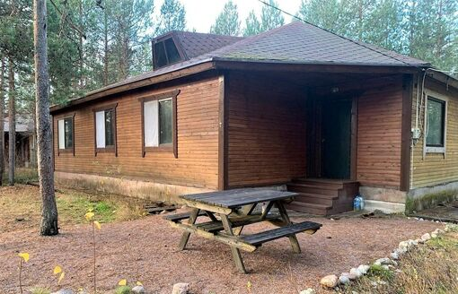
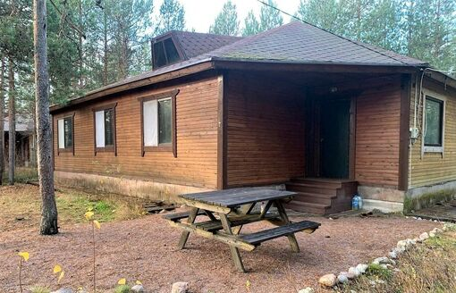
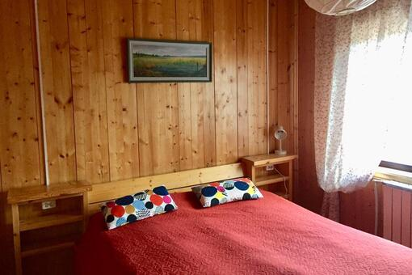
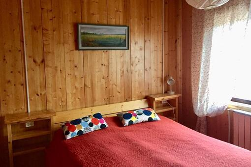
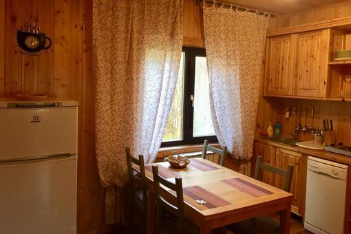
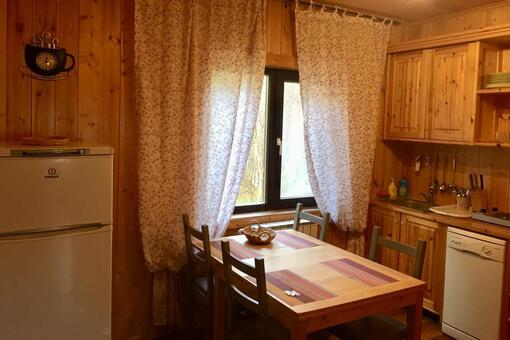
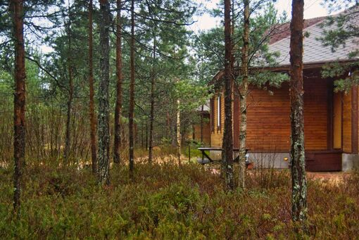

Добро пожаловать в Опса.Карелия
Наш комплекс гостевых домов расположен в одном из живописнейших мест Карелии, на берегу реки Олонка, в 20 км. от старинного города Олонец и 5 км. от величественного Ладожского озера.
Красота здешней природы заставляет забыть о проблемах мегаполиса и погрузиться в атмосферу легкости и полного единения с природой.
Здесь Вы найдёте всё то, что так давно искали: душевное умиротворение, опьяняющий своей чистотой воздух, восстановите свои жизненные силы, сможете попробовать себя в рыбалке и других увлекательных занятиях. Отдаленность от города позволяет насладиться нетронутой людьми природой и наличием еще никем нехоженых троп.
Комплекс гостевых домов, состоящий из 7 коттеджей, оборудованных в соответствии со всеми потребностями наших гостей. К Вашим услугам также специально организованные места для пикников, мангалы и шампуры, русская баня, рыбалка.
Сочетание комфортабельности проживания, чистого воздуха и уникальной природы обеспечит Вам незабываемый отдых!
О домах

Комфортное проживание до 8 человек - вот что вас ждет в наших домах для отдыха. Площадь каждого дома - более 100 кв.м.
- Прихожая, просторный холл, полностью оборудованная кухня и санузел.
- Три уютные спальни с односпальными кроватями или одной большой двуспальной кроватью, прикроватными тумбочками и шкафами для одежды. Полный комплект постельного белья и полотенец предоставляется.
- Холл с раскладывающимся диваном на два спальных места, журнальным столиком, удобными креслами и телевизором.
- Кухонный гарнитур из дерева, раздвижной стол, стулья, электрическая плита, холодильник, микроволновая печь, посудомоечная машина и необходимый набор посуды.
- Просторный санузел с душем, унитазом, умывальником и стиральной машиной.
- Собственная парковка перед каждым домом для нескольких машин
- Возможность проведения пикника на свежем воздухе с использованием стола с лавками и места для барбекю.
Что вас ждет внутри:
Перед каждым заездом гостей проводится уборка помещений, смена постельного белья и полотенец, чтобы вы могли полностью насладиться своим отдыхом.
 

 

 


Наши цены
Дома сдаются в аренду сезонно: с апреля по октябрь
Ориентировочные цены за сутки на 2023 год:
Июль
Август
Сентябрь
Октябрь
Будни
8000 руб
8000 руб
7000 руб
6000 руб
Выходные
8000 руб
8000 руб
8000 руб
7000 руб
На компанию до 8 человек
Минимальный срок бронирования - 2 суток
Стоимость в праздничные дни уточняйте
Заезд после 14.00, выезд до 12.00
Чем заняться в Опсе
Идеальные возможности для приятного отдыха
-

Надышаться чистым воздухом, выспаться в тишине
-
Встретить рассвет или закат на Ладоге
-

Собрать лесные ягоды возле дома
-

Найти поляну белых грибов
-
Пройтись босиком по песчаному пляжу в устье, окунуться в освежающие воды Ладоги
-

Пожарить мясо и овощи на мангале
-
Попробовать покататься на сап-борде
-
Сделать пикник на пляже
-

Половить рыбу в реке Олонке и закоптить ее
-

Прокатиться на квадроцикле
-
Попариться в русской бане
-

Просто расслабиться
Достопримечательности
Изучите наши окрестности
Дюны "Больничные горки"

Местная природная достопримечательность
Летом хорошо погулять, зимой покататься на ватрушках
Песчаный пляж у устья реки Олонка

Ближайший пляж к комплексу. В реке вода обычно теплее, чем в Ладожском озере
Можно добраться на велосипеде.
Ладожские дюны

Местная природная достопримечательность
У устья реки Тулокса
Пляж у Видлицы

Длинный песчаный пляж на Ладожском озере
Национальный музей карелов-ливвиков

имени Н. Г. Прилукина
Небольшой, но очень интересный национальный музей Карелии
Собор Смоленской иконы Божией Матери в Олонце

Православный храм
Россия, Республика Карелия, Олонец, остров Мариам
Лютеранская церковь святого Креста церкви Ингрии

Протестантская церковь
ул. Свирских Дивизий, 12А, Олонец, Россия
Олонецкие мосты
В окрестностях и самом Олонце есть несколько любопытных мостов
В том числе деревянный подвесной мост в деревне Рыпушкалицы
Никольский Адриано-Андрусовский мужской монастырь

21 км
Россия, Республика Карелия, Олонецкий район, урочище Андрусово
Бывший аэродром Финских ВВС
25 км
Республика Карелия, Олонецкий район, Видлицкое сельское поселение
Традиционная карельская деревня Большая Сельга
41 км
Россия, Республика Карелия, Олонецкий район, Куйтежское сельское поселение, деревня Сельга
Сяндемский Успенский женский монастырь
50 км
Республика Карелия, Олонецкий район, Коверское сельское поселение, деревня Сяндеба
Александро-Свирский монастырь
57 км
Свято-Троицкий Александра Свирского мужской монастырь
Ленинградская область, Лодейнопольский район, Янегское сельское поселение, деревня Старая Слобода
Габановский маяк

62 км
(Табановасский маяк)
Республика Карелия, Олонецкий район, Мегрегское сельское поселение, деревня Габановский Маяк
Важеозерский Спасо-Преображенский мужской монастырь

80 км
Республика Карелия, Олонецкий район, Коткозерское сельское поселение, посёлок Интерпосёлок
Удивительная деревня Мандроги
101 км
Музей под открытым небом
Ленинградская область, Подпорожское городское поселение, территория Верхние Мандроги
Церковь Николая Чудотворца в Согинцах

120 км
Православный храм
Ленинградская область, Подпорожский район, Никольское городское поселение, поселок городского типа Никольский
Гидроэлектростанция № 25 Пиенийоки
73 км
Ленинградская область, Подпорожский район, Никольское городское поселение, поселок городского типа Никольский
Водопад Белые мосты

140 км
Республика Карелия, Питкярантский район, Питкярантское городское поселение
Гидроэлектростанция № 22 Харлу
154 км
Республика Карелия, Питкярантский район, Харлуское сельское поселение, посёлок Харлу
Гидроэлектростанция № 22 Хямекоски
160 км
Республика Карелия, Питкярантский район, Харлуское сельское поселение, посёлок Харлу, деревня Хямекоски, Железнодорожная улица
Горный парк Рускеала
180 км
Республика Карелия, Питкярантский район, Мраморная ул., 1, посёлок Рускеала
Отзывы
Что говорят наши гости о комплексе


О владельцах
Приветствуем вас в Опса.Карелия!

Мы, Евгений, Марина и наши дети, владельцы этого уютного уголка природы, будем рады увидеть вас среди наших гостей!
Мы сами восхищаемся этим местом и часто проводим в Опсе время с детьми, внуками и друзьями. Всех нас объединяет любовь к природе и величественной красоте Карелии.
Наш гостевой комплекс предлагает комфортабельные дома с тремя спальнями, и они доступны как для кратскосрочного отдыха, так и для долгосрочной аренды. Независимо от того, хотите ли вы провести выходные или несколько недель, вы обязательно найдете здесь прекрасное место для отдыха.
Всегда можно найти интересные занятия по душе. Почему бы не собрать лесные ягоды возле дома или не отправиться на поиски поляны с белыми грибами? А может быть, вы предпочтете прогуляться босиком по песчаному пляжу и окунуться в освежающие воды Ладожского озера? Мы предлагаем вам возможность устроить пикник на пляже, попробовать свои силы на сап-борде, насладиться прогулкой на квадроцикле или отдохнуть в колоритной русской бане. А если вы просто хотите расслабиться, то у нас есть все условия для этого.
Наша семья всегда стремится обеспечить гостям комфорт и удобство. Если у вас возникнут вопросы или понадобится помощь, мы всегда на связи.
Искренне надеемся, что вы проведете у нас восхитительное время и захотите вернуться сюда снова и снова. Добро пожаловать!
Наши контакты
Наш адрес
Республика Карелия, Олонецкий район, Ильинский, ул. Ладожская 61.031451, 32.652826Телефон
+7 (911) 0811768Как добраться
Санкт-Петербург - Опса.Карелия

На поезде
Теперь в связи с запуском пригородного поезда Лодейное поле - Сортавала к нам приезжать из Санкт-Петербурга стало очень удобно. В 2 км от комплекса, в пешей доступности, расположена остановка электрички ст.Нурмойла.
Поезд «Ласточка» стыкуется в Лодейном поле с пригородным поездом «Орлан» с разницей в 10 мин. Путь из Санкт-Петербурга до п. Нурмойла, где находятся наши коттеджи займёт 4 часа.
Также удобно ездить на этом поезде до горного парка Рускеала.
На машине
На своем автомобиле путь из Санкт-Петербурга по Мурманскому шоссе, автодороге "Кола", обычно занимает в районе 4 часов. Расстояние от КАД до комплекса - 320 км.
На автобусе
Ежедневно с автовокзала на Обводном канале в Санкт-Петербурге в сторону Питкяранты отправляется автобус по маршруту № 963. Через 5 часов 20 минут автобус проезжает п. Ильинский, где и находится наш гостевой комплекс.
Дополнительная информация
Ответы на часто задаваемые вопросы
Легко ли проехать до комплекса на машине?
Дорога до поселка Ильинский асфальтированная.
Подъездной путь к комплексу, 500 метров грунтовой дороги, доступен для легкового автомобиля.
Где можно купить продукты, хозтовары?
В 2 км от комплекса есть Пятерочка, Магнит и другие магазины.
С удовольствием расскажем, где можно купить фермерское мясо, рыбу из Ладожского озера, грибы и ягоды.
Что с питьевой водой?
Питьевую воду можно покупать в магазинах в п. Ильинском, либо набирать в колонках в том же Ильинском или Нурмойле
Работает ли на территории комплекса сотовая связь?
Хорошо работает связь от МТС. По остальным операторам связь не гарантируется.
Что с интернетом?
По запросу предоставляется WiFi-роутер на базе сотовой связи, скорость обычно порядка 10 мбит/с.
Есть ли выход к реке?
У гостей комплекса есть пеший доступ к оборудованному пирсу.
В пос. Нурмойла можно найти съезд для спуска лодки на воду.
Можно ли заказать доставку продуктов или еды?
Из Олонца можно заказать домашнюю еду по карельским рецептам.
Также есть привычные для городского жителя пицца, бургеры, воки, суши.
Есть ли рядом медицинский пункт?
В 2 км от комплекса есть Пятерочка, Магнит и другие магазины.
В Ильинском на ул. В.Н. Леселидзе, 111 есть амбулатория. В Олонце в 22 км. есть районная больница.
Мы в VK
Следите за нашим блогом